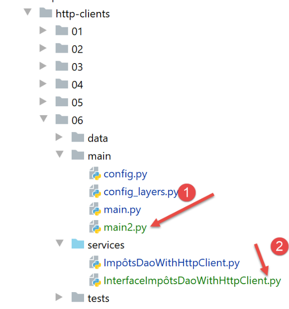

29. Application exercise: version 11
29.1. Introduction
In previous versions of the client/server tax calculation application, the [business logic] layer that implements the business rules for this calculation was on the server side. We now propose to move it to the client side. What is the benefit? Some of the work previously done by the server will be moved to the client side. Consider a scenario where a server is queried by N clients; N tax business calculations will be performed by the clients. In previous versions, the server performed these N business calculations. Because it no longer performs the business calculation, the server will respond more quickly to its clients and will therefore be able to serve more of them simultaneously.
The client/server architecture becomes as follows:

- the [business] layer [10] has been duplicated [12] on the client;
- a new script [main2] [11] has been added to the client;
The web client will have two ways to calculate the tax for the list of taxpayers found in [3]:
- use the method from the previous version. It uses the server’s [business] layer [10]. The [main] script will use this method;
- simply request the tax authority data from the server [2-4] and then use the client-side [business] layer [12];
We will compare the performance of the two methods.
29.2. The web server
The web server directory structure will be as follows:

- The [http-servers/06] directory is initially created by copying the [http-servers/05] directory. We will indeed retain the features of the previous version 10. We will simply add a new feature to it. This is implemented by the presence of a new controller [get_admindata_controller] [1]. The other controller [calculate_tax_controller] is none other than the old [index_controller] that has been renamed; ## 29.3. Configuration
The server will offer two service URLs:
- [/calculate-tax] to calculate the tax for a list of taxpayers passed in the body of a POST request. It therefore corresponds to the [/] URL from the previous version 10;
- [/get-admindata] returns the JSON string of tax administration data;
The configuration [config] associates each of these URLs with the controller that handles it:
# dictionary of web application controllers
import calculate_tax_controller, get_admindata_controller
controllers = {"calculate-tax": calculate_tax_controller, "get-admindata": get_admindata_controller}
config['controllers'] = controllers
29.4. The main script [main]
The main script [main] restructures the [main] script from the previous version:
# expects a mysql or pgres parameter
import sys
syntax = f"{sys.argv[0]} mysql / pgres"
error = len(sys.argv) != 2
if not error:
dbms = sys.argv[1].lower()
error = dbsystem != "mysql" and dbsystem != "pgres"
if error:
print(f"syntax: {syntax}")
sys.exit()
# configure the application
import config
config = config.configure({'db': db})
# dependencies
…
# Retrieve data from the tax authority
error = False
try:
# admindata will be a read-only application-scope variable
config["admindata"] = config["layers"]["dao"].get_admindata()
# success log
logger.write("[server] Successful database connection\n")
except ImpôtsError as ex:
# log the error
…
…
# if there was an error, stop
if error:
sys.exit(2)
# the Flask application can start
app = Flask(__name__)
# main controller
def main_controller() -> tuple:
# retrieve the requested action
dummy, action=request.path.split('/')
logger = None
try:
# logger
logger = Logger(config["logsFilename"])
# store it in a thread-specific configuration
thread_config = {"logger": logger}
thread_name = threading.current_thread().name
config[thread_name] = {"config": thread_config}
# log the request
logger.write(f"[index] request: {request}\n")
# pause the thread if requested
sleep_time = config["sleep_time"]
if sleep_time != 0:
# The pause is random so that some threads are interrupted and others are not
random = randint(0, 1)
if random == 1:
# log before pause
logger.write(f"[index] thread paused for {sleep_time} second(s)\n")
# pause
time.sleep(sleep_time)
# have the request executed by the request controller
controller = config['controllers'][action]
result, status_code = controller.execute(request, config)
# Was there a fatal error?
if status_code == status.HTTP_500_INTERNAL_SERVER_ERROR:
# Send an email to the application administrator
config_mail = config["adminMail"]
config_mail["logger"] = logger
SendAdminMail.send(config_mail, json.dumps(result, ensure_ascii=False))
# Log the response
logger.write(f"[index] {result}\n")
# send the response
print(result)
return json_response(result, status_code)
except BaseException as error:
# log the error if possible
if logger:
logger.write(f"[index] {error}")
# prepare the response for the client
result = {"response": {"errors": [f"{error}"]}}
# Send the response
return json_response(result, status.HTTP_500_INTERNAL_SERVER_ERROR)
finally:
# Close the log file if it was opened
if logger:
logger.close()
# calculate the tax
@app.route('/calculate-tax', methods=['POST'])
@auth.login_required
def calculate_tax():
# Pass control to the main controller
return main_controller()
# retrieve data from the tax administration
@app.route('/get-admindata', methods=['GET'])
@auth.login_required
def get_admindata():
# Pass control to the main controller
return main_controller()
# main only
if __name__ == '__main__':
# start the server
app.config.update(ENV="development", DEBUG=True)
app.run(threaded=True)
- lines 88–93: the [calculate_tax] function handles the URL [/calculate-tax];
- lines 95–100: the [get_admindata] function handles the URL [/get-admindata];
- These two functions do nothing on their own. They immediately hand control over to the main controller [main_controller] in lines 37–86;
- lines 37–86: the main controller [main_controller] is nothing more than the [index] function from the previous version, with one minor difference: whereas the [index] function handled only a single URL, here [main_controller] handles two URLs. It must therefore have these processed by one of the two controllers [calculate_tax_controller, get_admin_data_controller];
- Lines 39–40: We retrieve the requested action [calculate_tax] or [get_admindata]. This information is in the URL path [request.path]. Depending on the case, [request.path] is either [/get-admindata] or [/calculate_tax]. The split on line 40 will yield two elements:
- the empty string for the part preceding the /;
- the name of the requested action for the part following the /;
- lines 62-63: once the URL action has been retrieved, we know which controller to use to handle the URL. This information is in the configuration [config]; ## 29.5. Controllers
The [calculate_tax_controller] is none other than the [index_controller] from the previous version.
The [get_admindata_controller] controller is as follows:
from flask_api import status
from werkzeug.local import LocalProxy
def execute(request: LocalProxy, config: dict) -> tuple:
# return the response
return {"response": {"result": config["admindata"].asdict()}}, status.HTTP_200_OK
- The URL [/get-admindata] must return the JSON string of the tax administration data;
- line 6: this data was retrieved by the main script [main] and placed in the dictionary [config] as an [AdminData] object. We return the dictionary of this object; ## 29.6. Postman Tests
We start the web server, the DBMS, and the mail server [hMailServer]. Then, using a Postman client, we calculate the tax for several taxpayers:

In the Postman console, the client/server dialogue is as follows:
POST /calculate-tax HTTP/1.1
Authorization: Basic YWRtaW46YWRtaW4=
Content-Type: application/json
User-Agent: PostmanRuntime/7.26.2
Accept: */*
Cache-Control: no-cache
Postman-Token: 5e71461a-fec8-4315-85e8-41721de939e5
Host: localhost:5000
Accept-Encoding: gzip, deflate, br
Connection: keep-alive
Content-Length: 824
[
{
"married": "yes",
"children": 2,
"salary": 55555
},
…
{
"married": "yes",
"children": 3,
"salary": 200,000
}
]
HTTP/1.0 200 OK
Content-Type: application/json; charset=utf-8
Content-Length: 1461
Server: Werkzeug/1.0.1 Python/3.8.1
Date: Wed, 29 Jul 2020 07:02:07 GMT
{"response": {"results": [{"married": "yes", "children": 2, "salary": 55555, "tax": 2814, "surcharge": 0, "rate": 0.14, "discount": 0, "reduction": 0}, {"married": "yes", "children": 2, "salary": 50000, "tax": 1384, "surcharge": 0, "rate": 0.14, "discount": 384, "reduction": 347…]}}
Now let’s request the URL [/get-admindata] with a GET request:

The client/server dialogue in the Postman console is as follows:
GET /get-admindata HTTP/1.1
Authorization: Basic YWRtaW46YWRtaW4=
User-Agent: PostmanRuntime/7.26.2
Accept: */*
Cache-Control: no-cache
Postman-Token: 4af342c4-7ecb-4ab2-9e12-d653f81da424
Host: localhost:5000
Accept-Encoding: gzip, deflate, br
Connection: keep-alive
HTTP/1.0 200 OK
Content-Type: application/json; charset=utf-8
Content-Length: 596
Server: Werkzeug/1.0.1 Python/3.8.1
Date: Wed, 29 Jul 2020 07:07:24 GMT
{"response": {"result": {"limits": [9964.0, 27519.0, 73779.0, 156244.0, 93749.0], "coeffr": [0.0, 0.14, 0.3, 0.41, 0.45], "coeffn": [0.0, 1394.96, 5798.0, 13913.7, 20163.4], "couple_discount_ceiling": 1970.0, "half-share_reduction_value": 3797.0, "single_income_ceiling_for_reduction": 21037.0, "half-share_QF_ceiling": 1551.0, "max_10_percent_allowance": 12502.0, "single_tax_ceiling_for_discount": 1595.0, "single_discount_ceiling": 1196.0, "couple_income_ceiling_for_reduction": 42074.0, "id": 1, "minimum_ten_percent_allowance": 437.0, "couple_tax_ceiling_for_discount": 2627.0}}}
29.7. The web client


The [http-clients/06] folder is initially created by copying the [http-clients/05] folder. The modification work essentially consists of:
- modifying the [config_layers] configuration so that it now includes a [business] layer. Previously, it only had a [DAO] layer;
- adding a new method to the [dao] layer;
- writing a script [main2] that will rely on the client’s [business] layer to calculate taxpayers’ taxes; ### 29.7.1. Client Layer Configuration
Layer configuration occurs in two places:
- in the [config] configuration, which must include the folder containing the [business] layer implementation in the client’s dependencies. This folder was already included in the dependencies:
absolute_dependencies = [
# project folders
# BaseEntity, MyException
f"{root_dir}/classes/02/entities",
# TaxDaoInterface, TaxBusinessInterface, TaxUiInterface
f"{root_dir}/taxes/v04/interfaces",
# AbstractTaxDao, TaxConsole, TaxBusiness
f"{root_dir}/taxes/v04/services",
# TaxDaoWithAdminDataInDatabase
f"{root_dir}/taxes/v05/services",
# AdminData, ImpôtsError, TaxPayer
f"{root_dir}/taxes/v04/entities",
# Constants, tax brackets
f"{root_dir}/taxes/v05/entities",
# TaxDaoWithHttpClient
f"{script_dir}/../services",
# configuration scripts
script_dir,
# Logger
f"{root_dir}/impots/http-servers/02/utilities",
]
Then the [config_layers] file must be modified:
def configure(config: dict) -> dict:
# instantiation of the application layers
# [business] layer
from BusinessTaxes import BusinessTaxes
business = BusinessTaxes()
# DAO layer
from TaxDaoWithHttpClient import TaxDaoWithHttpClient
dao = ImpôtsDaoWithHttpClient(config)
# return the layer configuration
return {
"dao": dao,
"business": business
}
- lines 4–6: instantiation of the [business] layer;
- lines 13-16: the [business] layer is returned in the layer dictionary; ### 29.7.2. Implementation of the [dao] layer

The [dao] layer will implement the following [InterfaceImpôtsDaoWithHttpClient] interface:
from abc import abstractmethod
from AbstractTaxDao import AbstractTaxDao
class TaxDaoInterfaceWithHttpClient(AbstractTaxDao):
# tax calculation
@abstractmethod
def calculate_tax_in_bulk_mode(self, taxpayers: list):
pass
- line 5: the interface [InterfaceImpôtsDaoWithHttpClient] inherits from the abstract class [AbstractImpôtsDao], which manages access to the client’s file system. Note that it has an abstract method [get_admindata];
- lines 7–10: the method [calculate_tax_in_bulk_mode] that we defined in the previous version allows for the calculation of tax for a list of taxpayers;
This interface is implemented by the following [ImpôtsDaoWithHttpClient] class:
# imports
import json
import requests
from flask_api import status
from AbstractTaxesDao import AbstractTaxesDao
from AdminData import AdminData
from TaxError import TaxError
from TaxDaoWithHttpClientInterface import TaxDaoWithHttpClientInterface
class TaxDaoWithHttpClient(TaxDaoWithHttpClientInterface):
# constructor
def __init__(self, config: dict):
# parent initialization
AbstractTaxDao.__init__(self, config)
# storing configuration elements
# General configuration
self.__config = config
# server
self.__config_server = config["server"]
# debug mode
self.__debug = config["debug"]
# logger
self.__logger = None
def get_admindata(self) -> AdminData:
# allow exceptions to be raised
# service URL
config_server = self.__config_server
config_services = config_server['url_services']
service_url = f"{config_server['urlServer']}{config_services['get-admindata']}"
# connection
if config_server['authBasic']:
response = requests.get(url_service,
auth=(
config_server["user"]["login"],
config_server["user"]["password"]))
else:
response = requests.get(url_service)
# debug mode?
if self.__debug:
# logger
if not self.__logger:
self.__logger = self.__config['logger']
# we log
self.__logger.write(f"{response.text}\n")
# status code
status_code = response.status_code
# result as a dictionary
result = json.loads(response.text)
# if status code is not 200 OK
if status_code != status.HTTP_200_OK:
raise ImpôtsError(58, result['response']['errors'])
# return the result (a dictionary)
return AdminData().fromdict(result["response"]["result"])
# Calculate tax in bulk mode
def calculate_tax_in_bulk_mode(self, taxpayers: list):
# let exceptions propagate
…
- line 13: the [TaxDaoWithHttpClient] class implements the [TaxDaoWithHttpClientInterface] interface. It therefore derives from the [AbstractTaxDao] class;
- lines 65–66: the [calculate_tax_in_bulk_mode] method discussed in the previous version;
- lines 29–62: the [get_admindata] method, which the parent class [AbstractImpôtsDao] has declared as abstract. It is therefore implemented in the child class;
- lines 33–35: the URL of the web service that the [get-admindata] method must query is determined. These service URLs are defined in the client’s [config] configuration:
# the tax calculation server
"server": {
"urlServer": "http://127.0.0.1:5000",
"authBasic": True,
"user": {
"login": "admin",
"password": "admin"
},
"url_services": {
"calculate-tax": "/calculate-tax",
"get-admindata": "/get-admindata"
}
},
- (continued)
- lines 9–12: the two web server URLs;
- lines 37–44: the service URL is queried synchronously;
- lines 46–42: if the configuration requires it, the server’s response is logged;
- line 57: we know that the server sent a JSON string of a dictionary;
- lines 58–60: if the HTTP status of the response is not 200, then an exception is thrown;
- lines 61-62: the [AdminData] object encapsulating the tax administration data sent by the server is returned; ## 29.8. The [main, main2] scripts
The [main] script is the one from the previous version. It uses the [calculate_tax_in_bulk_mode] method from the [dao] layer and therefore uses the server’s [business] layer;
The [main2] script does the same thing as the [main] script but uses the client’s [business] layer:
# configure the application
import config
config = config.configure({})
# dependencies
from ImpôtsError import ImpôtsError
from Logger import Logger
logger = None
# code
try:
# logger
logger = Logger(config["logsFilename"])
# store it in the config
config["logger"] = logger
# start log
logger.write("Start of taxpayer tax calculation\n")
# retrieve the [dao] layer
dao = config["layers"]["dao"]
# retrieve taxpayers
taxpayers = dao.get_taxpayers_data()["taxpayers"]
# Are there any taxpayers?
if not taxpayers:
raise ImpôtsError(36, f"No valid taxpayers in the file {config['taxpayersFilename']}")
# retrieve data from the tax authority
admindata = dao.get_admindata()
# Calculate taxpayers' taxes using the [business] layer
business = config['layers']['business']
for taxpayer in taxpayers:
business.calculate_tax(taxpayer, admindata)
# Save the results to the JSON file
dao.write_taxpayers_results(taxpayers)
# except BaseException as error:
# # display the error
# print(f"The following error occurred: {error}")
finally:
# close the logger
if logger:
# End log
logger.write("End of taxpayer tax calculation\n")
# Close the logger
logger.close()
# we're done
print("Work completed...")
- lines 26-27: retrieve data from the tax authority’s server;
- lines 28-31: then the taxpayers' tax is calculated locally; ## 29.9. Client tests
In each of the scripts [main, main2], we log the start and end of the script. This allows us to calculate the script’s execution time. Let’s make some predictions:
- the [main] script from the previous version:
- creates N threads that run simultaneously;
- each thread processes a batch of taxpayers for whom it calculates the tax via a single request to the server;
- because the N threads run simultaneously, the N+1 request is sent before the N request has received its response. Thus, the N requests cost more than a single request but probably not much more. There are also 11 (the number of taxpayers) business calculations on the server;
- the [main2] script in this version:
- makes a single request to the server;
- performs 11 business calculations locally on the client;
The business calculations will take the same amount of time whether performed on the server or the client. The difference will therefore lie in the requests. We can therefore expect the execution time of [main] to be slightly longer than that of [main2].
We launch the version 11 server, the DBMS, and the [hMailServer] mail server. On the server side, we set the [sleep_time] parameter to zero so that both tests are executed under the same conditions.
Execution 1 [main]
The execution of [main] produces the following logs:
2020-07-29 14:35:50.016079, MainThread: start of taxpayer tax calculation
2020-07-29 14:35:50.016079, Thread-1: Start of tax calculation for 1 taxpayer
2020-07-29 14:35:50.016079, Thread-2: Start of tax calculation for 4 taxpayers
2020-07-29 14:35:50.016079, Thread-3: Start of tax calculation for 2 taxpayers
2020-07-29 14:35:50.016079, Thread-4: Start of tax calculation for 2 taxpayers
2020-07-29 14:35:50.024426, Thread-5: Start of tax calculation for 2 taxpayers
2020-07-29 14:35:50.050473, Thread-1 : {"response": {"results": [{"married": "yes", "children": 2, "salary": 55555, "tax": 2814, "surcharge": 0, "rate": 0.14, "discount": 0, "reduction": 0}]}}
2020-07-29 14:35:50.050473, Thread-1: End of tax calculation for 1 taxpayer
2020-07-29 14:35:50.050473, Thread-3 : {"response": {"results": [{"married": "yes", "children": 3, "salary": 100000, "tax": 9200, "surcharge": 2180, "rate": 0.3, "discount": 0, "reduction": 0}, {"married": "yes", "children": 5, "salary": 100000, "tax": 4230, "surcharge": 0, "rate": 0.14, "discount": 0, "reduction": 0}]}}
2020-07-29 14:35:50.051214, Thread-3: End of tax calculation for the 2 taxpayers
2020-07-29 14:35:50.051214, Thread-5 : {"response": {"results": [{"married": "no", "children": 0, "salary": 200000, "tax": 64210, "surcharge": 7498, "rate": 0.45, "discount": 0, "reduction": 0}, {"married": "yes", "children": 3, "salary": 200000, "tax": 42842, "surcharge": 17283, "rate": 0.41, "discount": 0, "reduction": 0}]}}
2020-07-29 14:35:50.051214, Thread-5: End of tax calculation for the 2 taxpayers
2020-07-29 14:35:50.051214, Thread-2 : {"response": {"results": [{"married": "yes", "children": 2, "salary": 50000, "tax": 1384, "surcharge": 0, "rate": 0.14, "discount": 384, "reduction": 347}, {"married": "yes", "children": 3, "salary": 50000, "tax": 0, "surcharge": 0, "rate": 0.14, "discount": 720, "reduction": 0}, {"married": "no", "children": 2, "salary": 100000, "tax": 19884, "surcharge": 4480, "rate": 0.41, "discount": 0, "reduction": 0}, {"married": "no", "children": 3, "salary": 100000, "tax": 16782, "surcharge": 7176, "rate": 0.41, "discount": 0, "reduction": 0}]}}
2020-07-29 14:35:50.051214, Thread-2: End of tax calculation for the 4 taxpayers
2020-07-29 14:35:50.051214, Thread-4 : {"response": {"results": [{"married": "no", "children": 0, "salary": 100000, "tax": 22986, "surcharge": 0, "rate": 0.41, "discount": 0, "reduction": 0}, {"married": "yes", "children": 2, "salary": 30000, "tax": 0, "surcharge": 0, "rate": 0.0, "discount": 0, "reduction": 0}]}}
2020-07-29 14:35:50.051214, Thread-4: Completion of tax calculation for 2 taxpayers
2020-07-29 14:35:50.051214, MainThread: End of tax calculation for taxpayers
The execution time was [051214-016079] nanoseconds (line 17 – line 1), i.e., 35 milliseconds and 135 nanoseconds.
We can see that between the first request made to the server and the last response received by the client, the duration is the same [051214-016079] (line 15 – line 1), 35 milliseconds and 135 nanoseconds.
Execution 2 [main2]
The execution of [main2] yields the following logs:
2020-07-29 14:41:03.303520, MainThread: start of taxpayer tax calculation
2020-07-29 14:41:03.345084, MainThread: {"response": {"result": {"limits": [9964.0, 27519.0, 73779.0, 156244.0, 13500.0], "coeffr": [0.0, 0.14, 0.3, 0.41, 0.45], "coeffn": [0.0, 1394.96, 5798.0, 13913.7, 20163.4], "couple_discount_ceiling": 1970.0, "half-share_reduction_value": 3797.0, "single_income_ceiling_for_reduction": 21037.0, "half-share_QF_ceiling": 1551.0, "max_10_percent_allowance": 12502.0, "single_tax_ceiling_for_discount": 1595.0, "single_discount_ceiling": 1196.0, "couple_income_ceiling_for_reduction": 42074.0, "id": 1, "minimum_ten-percent_allowance": 437.0, "couple_tax_ceiling_for_discount": 2627.0}}}
2020-07-29 14:41:03.349975, MainThread: End of taxpayer tax calculation
The execution time was [349975-303520] nanoseconds (line 3 - line 1), i.e., 46 milliseconds and 455 nanoseconds. Quite unexpectedly, [main] is faster than [main2].
We see that the single request from [main2] took [345084-303520] (line 2 – line 1), i.e., 41 milliseconds and 564 nanoseconds. The tax calculation then took [349975-345084] (line 3 – line 2), i.e., 4 milliseconds and 91 nanoseconds. It is the HTTP request that accounts for the execution time. Surprisingly, we see here that the single request from [main2] took longer [41 milliseconds] than the four simultaneous requests from [main] [35 milliseconds].
On the server side, the logs are as follows:
2020-07-29 14:35:27.047721, MainThread: [server] server startup
2020-07-29 14:35:27.140927, MainThread: [server] successful database connection
2020-07-29 14:35:28.790716, MainThread: [server] server startup
2020-07-29 14:35:28.847518, MainThread: [server] successful database connection
2020-07-29 14:35:50.039178, Thread-2: [index] request: <Request 'http://127.0.0.1:5000/calculate-tax' [POST]>
2020-07-29 14:35:50.039178, Thread-3: [index] request: <Request 'http://127.0.0.1:5000/calculate-tax' [POST]>
2020-07-29 14:35:50.043220, Thread-4: [index] request: <Request 'http://127.0.0.1:5000/calculate-tax' [POST]>
2020-07-29 14:35:50.044307, Thread-5: [index] request: <Request 'http://127.0.0.1:5000/calculate-tax' [POST]>
2020-07-29 14:35:50.045796, Thread-2: [index] {'response': {'results': [{'married': 'yes', 'children': 3, 'salary': 100000, 'tax': 9200, 'surcharge': 2180, 'rate': 0.3, 'discount': 0, 'reduction': 0}, {'married': 'yes', 'children': 5, 'salary': 100000, 'tax': 4230, 'surcharge': 0, 'rate': 0.14, 'discount': 0, 'reduction': 0}]}}
2020-07-29 14:35:50.045796, Thread-3 : [index] {'response': {'results': [{'married': 'yes', 'children': 2, 'salary': 55555, 'tax': 2814, 'surcharge': 0, 'rate': 0.14, 'discount': 0, 'reduction': 0}]}}
2020-07-29 14:35:50.046825, Thread-6: [index] request: <Request 'http://127.0.0.1:5000/calculate-tax' [POST]>
2020-07-29 14:35:50.046825, Thread-6 : [index] {'response': {'results': [{'married': 'yes', 'children': 2, 'salary': 50000, 'tax': 1384, 'surcharge': 0, 'rate': 0.14, 'discount': 384, 'reduction': 347}, {'married': 'yes', 'children': 3, 'salary': 50000, 'tax': 0, 'surcharge': 0, 'rate': 0.14, 'discount': 720, 'reduction': 0}, {'married': 'no', 'children': 2, 'salary': 100000, 'tax': 19884, 'surcharge': 4480, 'rate': 0.41, 'discount': 0, 'reduction': 0}, {'married': 'no', 'children': 3, 'salary': 100000, 'tax': 16782, 'surcharge': 7176, 'rate': 0.41, 'discount': 0, 'reduction': 0}]}}
2020-07-29 14:35:50.046825, Thread-4 : [index] {'response': {'results': [{'married': 'no', 'children': 0, 'salary': 200000, 'tax': 64210, 'surcharge': 7498, 'rate': 0.45, 'discount': 0, 'reduction': 0}, {'married': 'yes', 'children': 3, 'salary': 200000, 'tax': 42842, 'surcharge': 17283, 'rate': 0.41, 'discount': 0, 'reduction': 0}]}}
2020-07-29 14:35:50.046825, Thread-5 : [index] {'response': {'results': [{'married': 'no', 'children': 0, 'salary': 100000, 'tax': 22986, 'surcharge': 0, 'rate': 0.41, 'discount': 0, 'reduction': 0}, {'married': 'yes', 'children': 2, 'salary': 30000, 'tax': 0, 'surcharge': 0, 'rate': 0.0, 'discount': 0, 'reduction': 0}]}}
2020-07-29 14:41:03.341582, Thread-7 : [index] request : <Request 'http://127.0.0.1:5000/get-admindata' [GET]>
2020-07-29 14:41:03.341582, Thread-7 : [index] {'response': {'result': {'limits': [9964.0, 27519.0, 73779.0, 156244.0, 13500.0], 'coeffr': [0.0, 0.14, 0.3, 0.41, 0.45], 'coeffn': [0.0, 1394.96, 5798.0, 13913.7, 20163.4], 'couple_discount_ceiling': 1970.0, 'half-share_reduction_value': 3797.0, 'single_income_ceiling_for_reduction': 21037.0, 'half-share_tax_base_ceiling': 1551.0, 'maximum_10_percent_allowance': 12502.0, 'single_tax_ceiling_for_discount': 1595.0, 'single_discount_ceiling': 1196.0, 'couple_income_ceiling_for_reduction': 42074.0, 'id': 1, 'minimum_10_percent_allowance': 437.0, 'couple_tax_ceiling_for_discount': 2627.0}}}
- line 5: the first request from the client [main];
- line 14: the last response to the client [main]. There are 6 milliseconds and 647 nanoseconds between the two;
- lines 15–16: the single request from client [main2]. The response is instantaneous;